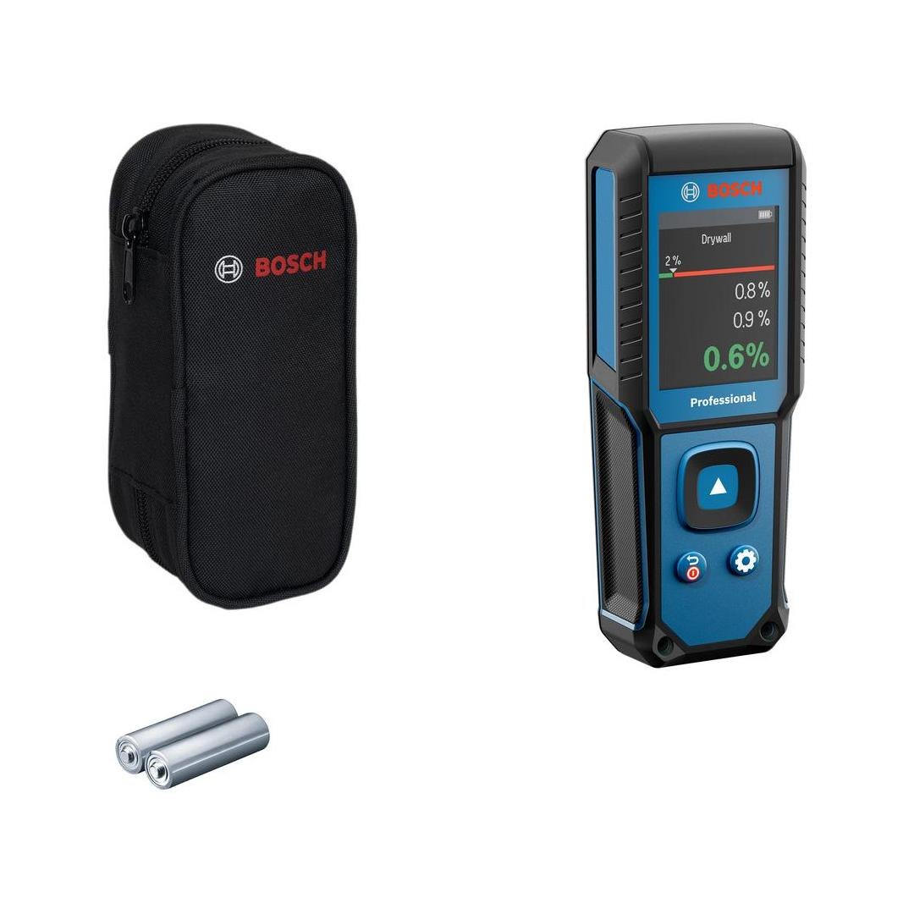
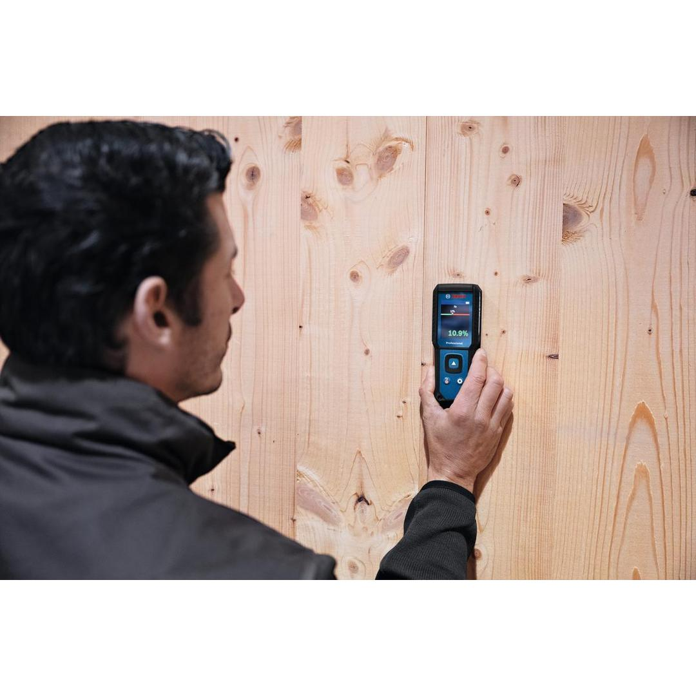
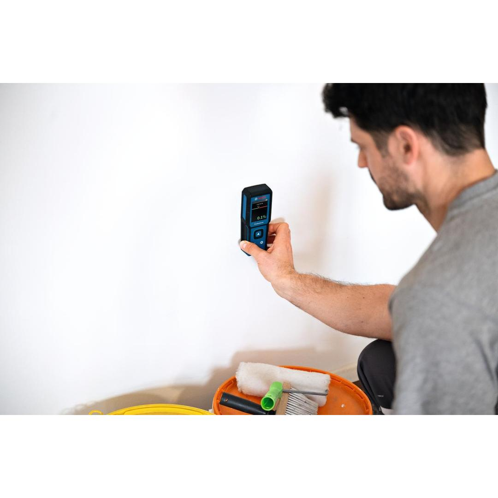
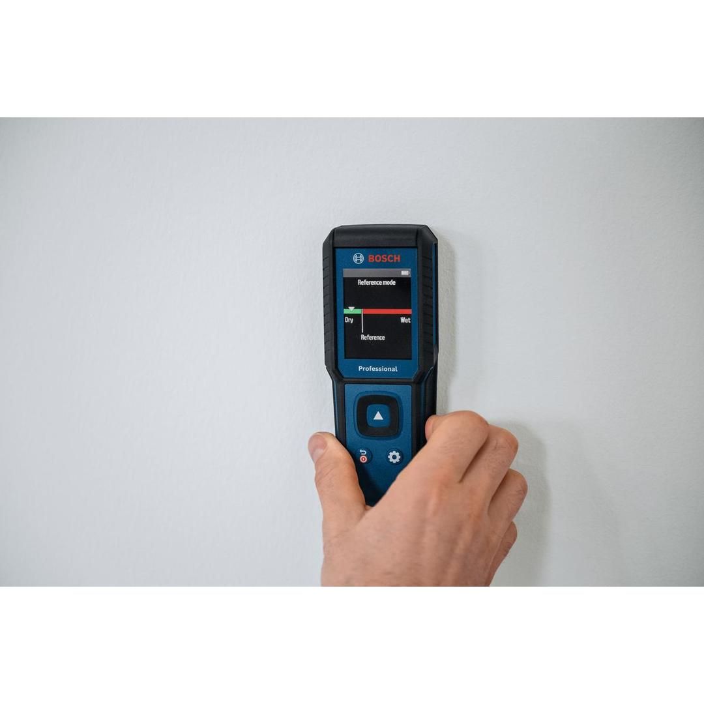
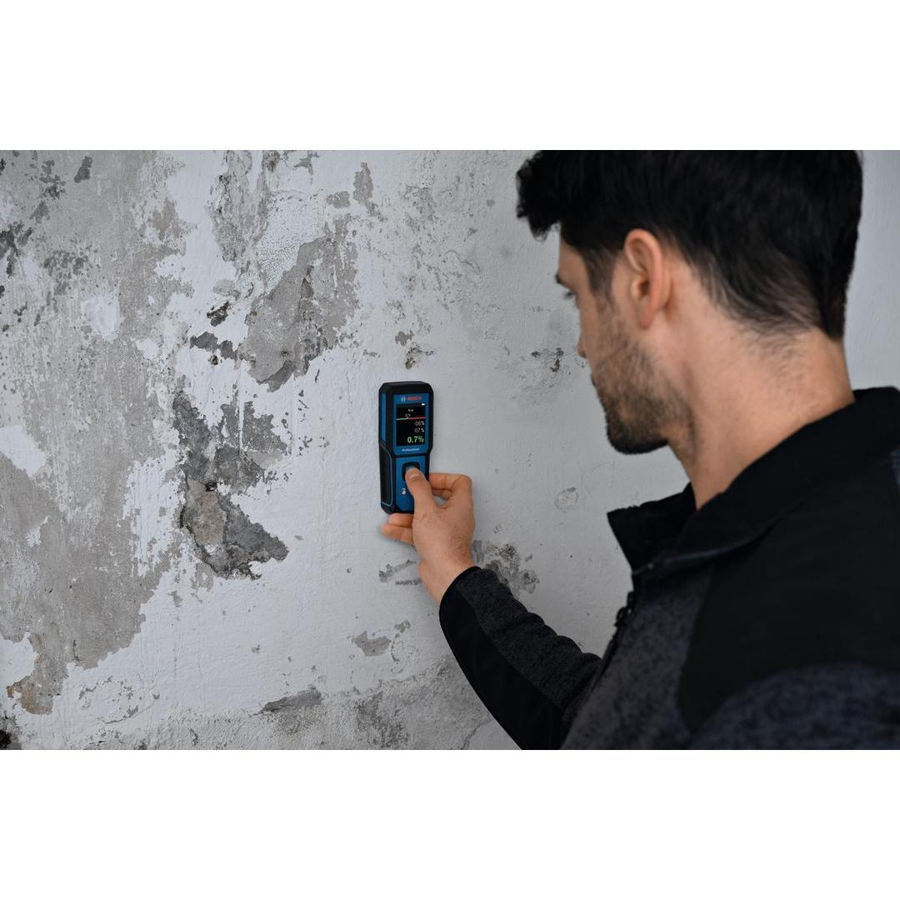

0601078200









The GMM 1-15 Professional Material moisture meter is your go-to device for quick and accurate non-invasive moisture readings (without pins). It measures moisture content in 37 types of wood and 10 types of building materials, showing results on a high-contrast, color LCD screen. The variable threshold scale makes reading results easy, while the reference mode allows you to compare moisture levels across different areas. Its robust design, rubber-enforced housing and IP65 rating ensure durability on tough jobsites, giving you a reliable performance every time - no matter the conditions.
| Dust and splash protection |
IP65 |
| Weight |
0.160 kg |
| Display type |
TFT LCD |
| Size of display |
2.4" |
| Operating temperature |
0 – 50 °C |
| Storage temperature |
-20 – 70 °C |
| Number of batteries |
2 Pcs |
| Battery type |
1.5 V LR6 (AA) |
| Moisture measuring accuracy |
Pad mode ±4% |
| Tool dimensions (L x W x H) |
154 x 60 x 32 |
| Net weight |
0.16 kg |
| Gross weight |
0.600 kg |
| Measuring depth |
0-30 mm |
Durable, non-invasive Material moisture meter for immediate and accurate readings
The GMM 1-15 Professional Material moisture meter is essential for drywallers, painters, facility managers, architects, plumbers, and carpenters. It effectively identifies moisture sources, checks surface conditions, and reads moisture levels. Whether you're inspecting drywall, ensuring a uniform paint finish, or monitoring the moisture level of wood, the GMM 1-15 Professional helps you make accurate evaluations. Its compatibility with the Li-ion battery pack ensures uninterrupted operation, allowing you to stay focused on the task at hand.
The GMM 1-15 Professional features a center button for holding measurements, making it easy to capture and review data. Adjustable sound feedback provides audible confirmation of measurements, so you can be sure everytime and work more efficiently. Designed for ease of use, this Material moisture meter lets you faster and more effectively in any environment.